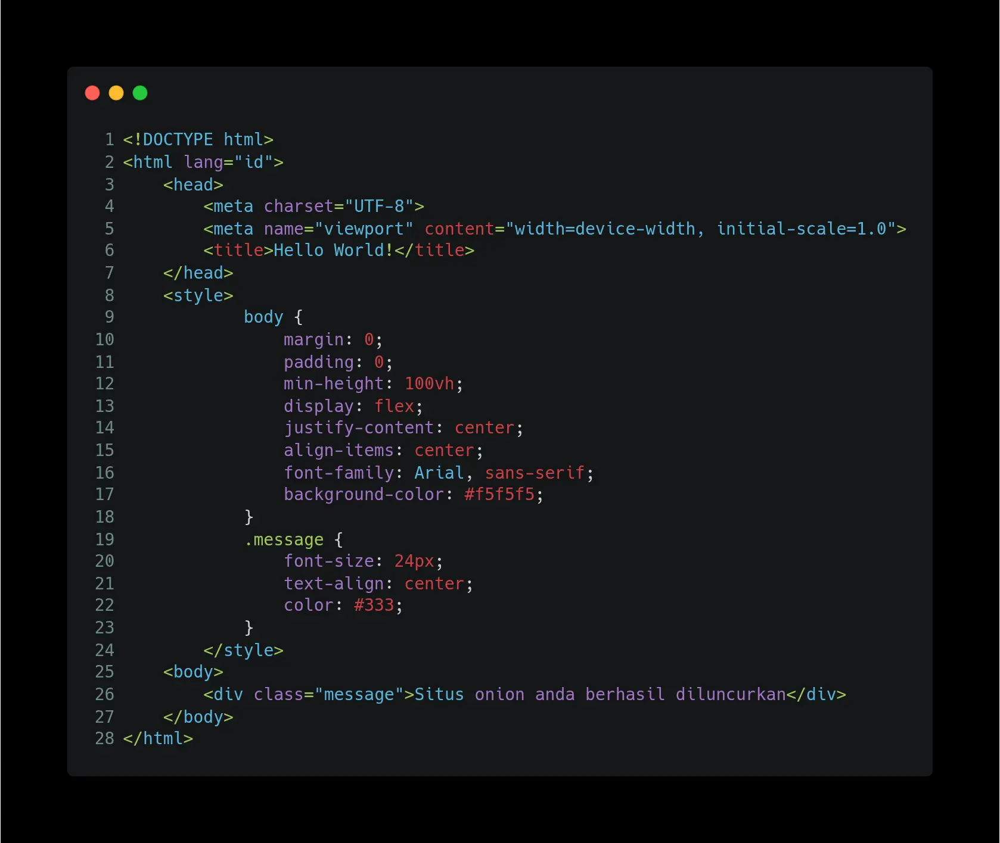

Menghosting Situs Web Anonim di Jaringan TOR
25 September 2025 | Jeannes BryanKali ini saya akan menuliskan cara menghosting situs web anonim di Jaringan TOR. Kita akan menggunakan OnionShare untuk menghosting situs dan Tor Browser untuk mengakses situs.
Jaringan TOR (The Onion Router) adalah sistem jaringan komunikasi terenkripsi yang dirancang untuk menjaga anonimitas pengguna saat berselancar di internet. TOR bekerja dengan mengarahkan lalu lintas internet pengguna melalui serangkaian relay (node) yang tersebar di seluruh dunia, yang masing-masing hanya mengetahui identitas node sebelum dan sesudahnya, sehingga menyulitkan pelacakan asal dan tujuan data. Setiap lapisan enkripsi dalam jaringan ini—seperti lapisan kulit bawang (onion)—dibuka secara bertahap di setiap relay, sehingga identitas pengguna dan aktivitas daringnya tetap terlindungi dari pengawasan, penyadapan, atau sensor. TOR sering digunakan untuk melindungi privasi, mengakses informasi yang diblokir, atau berkomunikasi secara aman di wilayah dengan pembatasan internet yang ketat.
OnionShare adalah aplikasi open-source yang memungkinkan pengguna berbagi file, menghosting situs web, atau mengobrol secara aman dan anonim melalui jaringan TOR. Dengan memanfaatkan teknologi TOR, OnionShare membuat layanan lokal di perangkat pengguna tersedia melalui alamat .onion yang hanya bisa diakses melalui Tor Browser, sehingga menjaga identitas dan lokasi pengirim maupun penerima tetap tersembunyi. File tidak diunggah ke server pihak ketiga, melainkan dikirim langsung dari perangkat pengguna ke penerima melalui koneksi terenkripsi, mengurangi risiko penyadapan atau pelacakan. OnionShare sangat berguna bagi jurnalis, aktivis, atau siapa pun yang membutuhkan cara aman untuk bertukar informasi sensitif tanpa meninggalkan jejak digital.
Langsung saja kita mulai. Langkah pertama silahkan unduh OnionShare kemudian install di komputer Anda. Saya asumsikan Anda sudah paham caranya. Setelah itu buka OnionShare yang sudah diinstall dan akan muncul tampilan seperti gambar dibawah ini.
Setelah itu klik tombol Connect to Tor lalu tunggu beberapa waktu hingga berhasil terhubung ke jaringan TOR. Apabila berhasil terhubung ke jaringan TOR, akan muncul tampilan seperti gambar dibawah ini.
Setelah itu klik tombol Start Hosting lalu akan muncul tampilan seperti gambar dibawah ini.
Karena saya hanya menghosting satu file html, jadi saya mengklik tombol Add Files dan memilih file index.html yang sudah saya buat sebelumnya. Berikut ini source code index.html yang saya buat.
Setelah memilih file index.html, akan muncul tampilan seperti gambar dibawah ini.
Silahkan centang opsi "Always open this tab when OnionShare is started" agar alamat situs tidak berubah setiap kali membuka OnionShare setelah aplikasi ditutup dan centang juga opsi "This is a public OnionShare service" agar situs bisa diakses tanpa perlu memasukkan kunci. Kemudian klik tombol Start sharing. Tunggu beberapa waktu sampai situs berhasil dihosting di jaringan TOR dan akan muncul tampilan seperti gambar dibawah ini.

Situs web sudah berhasil dihosting dan bisa diakses hanya melalui jaringan TOR. Sekarang silahkan unduh TOR Browser di ponsel Anda. Setelah terunduh silahkan buka dan akan muncul tampilan seperti gambar dibawah ini.
Kemudian klik tombol Connect dan tunggu beberapa waktu hingga berhasil terhubung ke jaringan TOR. Apabila berhasil terhubung akan muncul tampilan seperti gambar di bawah ini.
Kemudian tempel alamat .onion Anda di address bar dan pastikan url berawal dengan http dan bukan https. Setelah itu klik enter dan tunggu sejenak hingga situs web Anda berhasil diakses seperti gambar dibawah ini.
Perlu waktu yang lebih lama untuk mengakses situs web di jaringan TOR ketimbang di jaringan internet biasa. Hal ini terjadi karena cara kerja jaringan TOR yang lebih panjang seperti yang sudah dijelaskan diatas.
Sebagai informasi, OnionShare juga memiliki beberapa fitur lain disamping untuk menghosting situs web, seperti mengirim file, menerima file, dan obrolan anonim.
Tutorial menghosting situs web anonim di jaringan TOR sudah selesai. Terima kasih dan sampai jumpa kembali.